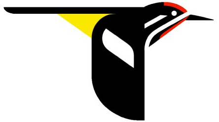

Audubon

Audubon is a nonprofit organization that protects birds and their habitats throughout the Americas using science, advocacy, education, and on-the-ground conservation. Audubon consists of state programs, nature centers, chapters, and partners that reach millions of people to unite communities to take conservation action.
American Birding Association
The American Birding Association (ABA) is a nonprofit organization that helps with leadership to birders by increasing their knowledge and skill in birding. They are the only organization in North America that is specifically dedicated to recreational birders. They also help with some conservation efforts. The ABA represents the North American bird-watching community.
American Birding Association
eBird is a company whose goal is to gather information from every birder's knowledge and use it to gather a checklist of birds, archive it, and use its power to drive data-driven science, conservation, and education. They strive to provide the most current and useful information to the birding community.
All About Birds
All About Birds is a company whose goal is to enable the discovery of new knowledge to understand and protect nature, innovate new technologies to reveal that knowledge, foster new leaders, inspire motivation to change, and transform science into action to make a difference on the ground.
The Bird Blogger
Michael Klotz is a bird blogger who wants to share his passion and love with people today and in the future. He wants to share photos and the experience of seeing those birds in the wild. Michael wants to protect wild areas and promote healthy diversity. He wants to be able to buy land with important birds to conserve their habitat.